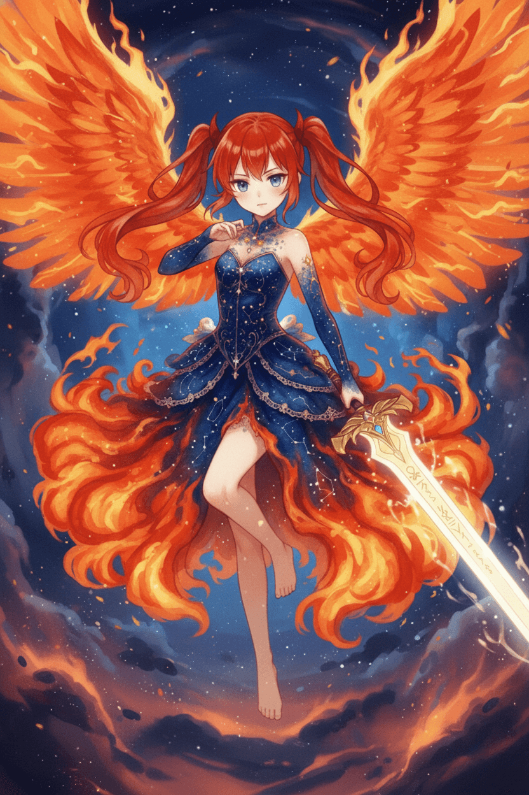

千戦練磨の軍神「マーズ」
「軍神の名を持つアタシに、敗北なんて文字はないわ。
アンタも、邪魔にならない程度には頑張りなさいよね！」
プロフィール
- 仮符号・別名: -
- 星座: -
- 好きなもの: メロンパン
- 嫌いなもの: 暗いところ
- 身長: 140cm
- B: 62 / W: 60 / H: 64
設定
ローマ神話の軍神の名を持つアルカステラ、それがマーズです。
彼女は、その名に違わない圧倒的な高い潜在能力を秘めています。
ただ、戦場を愛するがゆえか、人に対してはつい強気な態度を取ってしまい、素直になれない一面も。
あなたと共に多くの試練を乗り越え、真の絆を紡ぐことができたなら、
マーズはあなただけに彼女の本当の優しさを見せてくれるかもしれません。
性能
マーズの戦術は、自身や味方を徹底的に強化し、圧倒的なステータス差で相手をねじ伏せることにあります。
最大の特徴は、彼女だけが所持する最上位のセフィロトコード、「武装展開 -バースト・コンバット-」です。このコードは、全セフィロトコードの中で群を抜いた性能を誇り、状況に応じて一気に攻撃へ転じたり、鉄壁の守りを固めたりすることが可能です。
味方をいかに効率よく強化し、物理的な力の差で戦闘を有利に運ぶかが、マーズを使いこなす上での最大の鍵となります。
性能詳細
- HP: 50
- ATK: 3
- DEF: 3
アストラルコード1 マーズ・インヴォーク
コスト: -
タイミング: 自分のターン
効果:
【継続継続:x：ターンを跨いで効果が持続し、
回数制限を持つキーワードです。:3】
発動者のATK、DEFに+8の補正を与える。
また、発動者はタップ状態でもブロックをすることが出来る。
※この効果は、【継続】効果が切れた場合、
元の値に戻る。
【継続継続:x：ターンを跨いで効果が持続し、
回数制限を持つキーワードです。:3】
発動者のATK、DEFに+8の補正を与える。
また、発動者はタップ状態でもブロックをすることが出来る。
※この効果は、【継続】効果が切れた場合、
元の値に戻る。
アストラルコード2 スカーレット・アーツ
コスト: -
タイミング: 自分のターン
効果:
相手全体にATK×２のダメージを与える。
相手全体にATK×２のダメージを与える。
攻撃スキル ブレイジング・ラッシュ
コスト: 5
タイミング: 自分のターン
効果:
《ATK+4d6》のダメージ。
このスキルのコストは発動者の《セフィロト・コード》の数だけ減少する。
《ATK+4d6》のダメージ。
このスキルのコストは発動者の《セフィロト・コード》の数だけ減少する。
支援スキル1 バトル・クライ
コスト: 2
タイミング: 好きなタイミング
効果:
あなたのデッキのレアリティが『C』かつコストが3以下のセフィロト・コードを１枚を自身に発動する。
あなたのデッキのレアリティが『C』かつコストが3以下のセフィロト・コードを１枚を自身に発動する。
支援スキル2 ファースト・コンタクト
コスト: 1
タイミング: 好きなタイミング
効果:
手札からカードを1枚選び、デッキに戻す。
その後、デッキをシャッフルし、デッキから1枚ドローする。
手札からカードを1枚選び、デッキに戻す。
その後、デッキをシャッフルし、デッキから1枚ドローする。
支援スキル3 フレア・フォートレス
コスト: 0
タイミング: 好きなタイミング
効果:
このターン、あなたのアルカステラおよびフォロワーのATK,DEFは＋3される。
このターン、あなたのアルカステラおよびフォロワーのATK,DEFは＋3される。
リーダースキル※Lv1,2,3含めてどれか一つ Lv1:火急の誓火-オース・フレア-
タイミング:戦闘脱落時
効果:
このアルカステラのHPが0になった時、
ATK、DEFに+10の補正を与えて一度だけHP１の状態で戦線復帰する。
このアルカステラのHPが0になった時、
ATK、DEFに+10の補正を与えて一度だけHP１の状態で戦線復帰する。
- HP: 75
- ATK: 5
- DEF: 5
アストラルコード1 武装展開 -バースト・コンバット-
コスト: -
タイミング: 自分のターン
効果:
発動者は、以下の《セフィロト・コード》を1つ選択して装備する。
・千槍のグングニル
・神降のイージス
・星泉のミーミル
発動者は、以下の《セフィロト・コード》を1つ選択して装備する。
・千槍のグングニル
・神降のイージス
・星泉のミーミル
アストラルコード2 ウォークライ・レムナント
コスト: -
タイミング: カウンター[攻撃スキル]
効果:
【バトル中:3】
攻撃スキルを【無効】にし、相手のアルカステラ全体に発動者のATK分のダメージを与える。
【バトル中:3】
攻撃スキルを【無効】にし、相手のアルカステラ全体に発動者のATK分のダメージを与える。
レベルアップ条件
- 後行プレイヤーの5ターン目以降
- アストラルコードの使用が可能であること
攻撃スキル レッド・インパルス
コスト: 2
タイミング: 好きなタイミング
効果:
《ATK》のダメージ。
発動者の《セフィロト・コード》を任意の数だけ破損させる。。
破損した《セフィロト・コード》の枚数×2d6の値ダメージに補正を与える。
その後、破損した枚数分、カードをドローする。
《ATK》のダメージ。
発動者の《セフィロト・コード》を任意の数だけ破損させる。。
破損した《セフィロト・コード》の枚数×2d6の値ダメージに補正を与える。
その後、破損した枚数分、カードをドローする。
支援スキル1ヒートアップ
コスト: 1++
タイミング: 好きなタイミング
効果:
【累積累積:x：この能力を持つカードは、発動する度にコストがX増えます。 増えたコストはこのバトル中継続します。: 3】
このバトル中、あなたのすべてのアルカステラはATK、DEFを+3する。（重複可能）
【累積累積:x：この能力を持つカードは、発動する度にコストがX増えます。 増えたコストはこのバトル中継続します。: 3】
このバトル中、あなたのすべてのアルカステラはATK、DEFを+3する。（重複可能）
支援スキル2 テリトリー・ロック
コスト: 3
タイミング: 好きなタイミング
効果:
あなたのアルカステラを１体選択する。
このターン、相手の選択することで発動する
スキル、スペルカード、アストラルコードの効果は全てそのアルカステラが対象となる。
あなたのアルカステラを１体選択する。
このターン、相手の選択することで発動する
スキル、スペルカード、アストラルコードの効果は全てそのアルカステラが対象となる。
支援スキル3 軍司Lv2
コスト: 2
タイミング: 自分のターン
効果:
発動者をタップ状態にする。
このターン、あなたのアルカステラが使用する攻撃スキルのコストを-4する。
発動者をタップ状態にする。
このターン、あなたのアルカステラが使用する攻撃スキルのコストを-4する。
リーダースキル① Lv2:軍神
タイミング:常時
効果:
このバトル中、あなたのアルカステラのATK,DEFに+５の補正を与える。(重複不可)
このバトル中、あなたのアルカステラのATK,DEFに+５の補正を与える。(重複不可)
リーダースキル② Lv2:セレブレーション
タイミング:常時
効果:
与えるダメージが1.2倍になる。
与えるダメージが1.2倍になる。
- HP: 100
- ATK: 8
- DEF: 8

アストラルコード クリムゾン・オーグル
コスト: 99
タイミング: 好きなタイミング
効果:
あなたの場のアルカステラが３体の場合、コストを支払わずに発動できる。
発動者に以下の二つのセフィロト・コードから一つを選択し、装備する。
・叛英のウィガール
・栄悠のレーヴァティン
あなたの場のアルカステラが３体の場合、コストを支払わずに発動できる。
発動者に以下の二つのセフィロト・コードから一つを選択し、装備する。
・叛英のウィガール
・栄悠のレーヴァティン
レベルアップ条件
- 後行プレイヤーの10ターン目以降
- このバトル中にLv2武装展開 -バースト・コンバット-の３種類のセフィロト・コードを１回は装備していること
- エーテルが10以上であること
攻撃スキル ブレイズ・リローテッド
コスト: 2
タイミング: 自分のターン
効果:
《ATK+5d6》のダメージ。
デッキから３枚の《セフィロト・コード》を発動する。
《ATK+5d6》のダメージ。
デッキから３枚の《セフィロト・コード》を発動する。
支援スキル マルス・ブレードダンス
コスト: 0
タイミング: 好きなタイミング
効果:
ランダムな相手のアルカステラに5回の5点ダメージを与える。
ランダムな相手のアルカステラに5回の5点ダメージを与える。
リーダースキル※Lv1,2,3含めてどれか一つ Lv3:ブレイジング・ビート
タイミング:常時
効果:
あなたのアルカステラが発動する攻撃スキル、支援スキルのコストが0になる。
あなたのアルカステラが発動する攻撃スキル、支援スキルのコストが0になる。